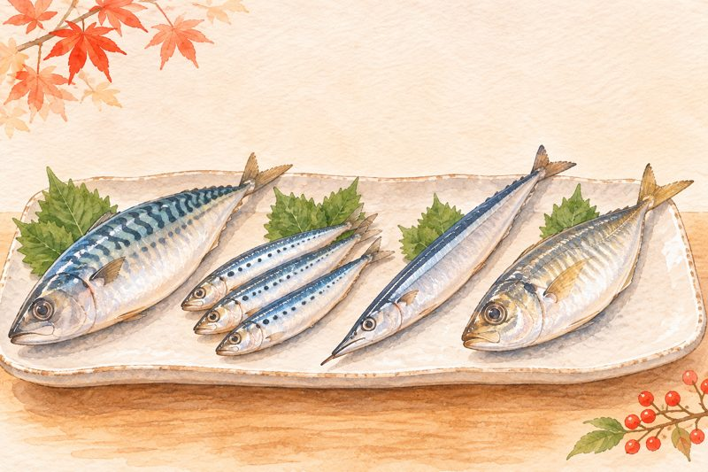
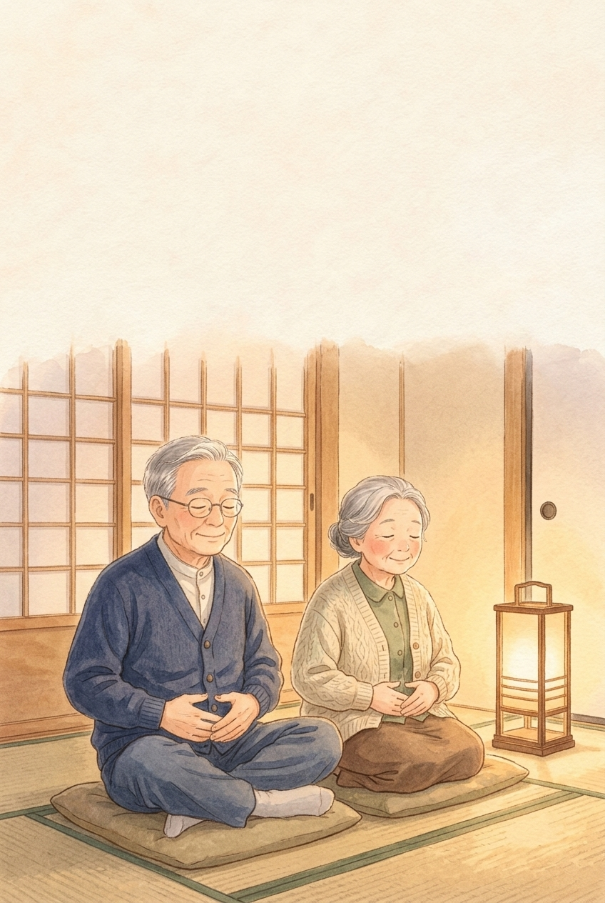
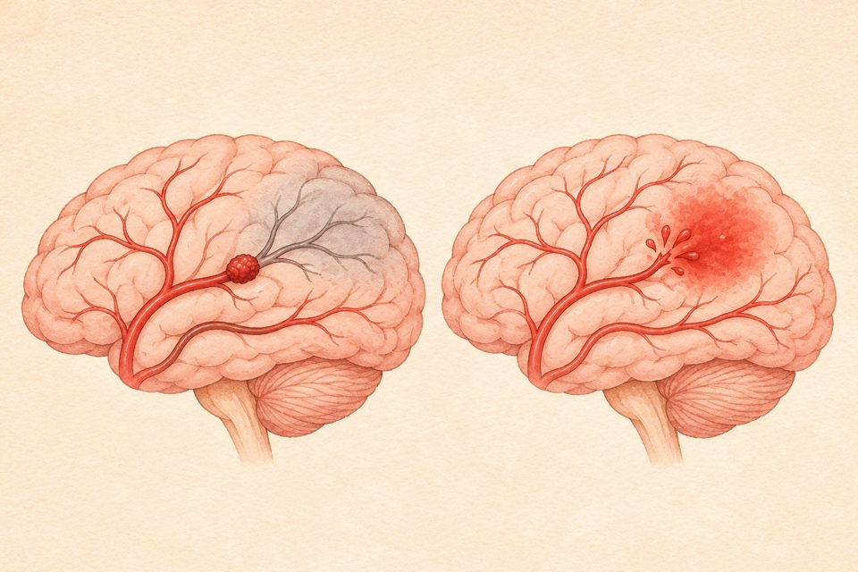
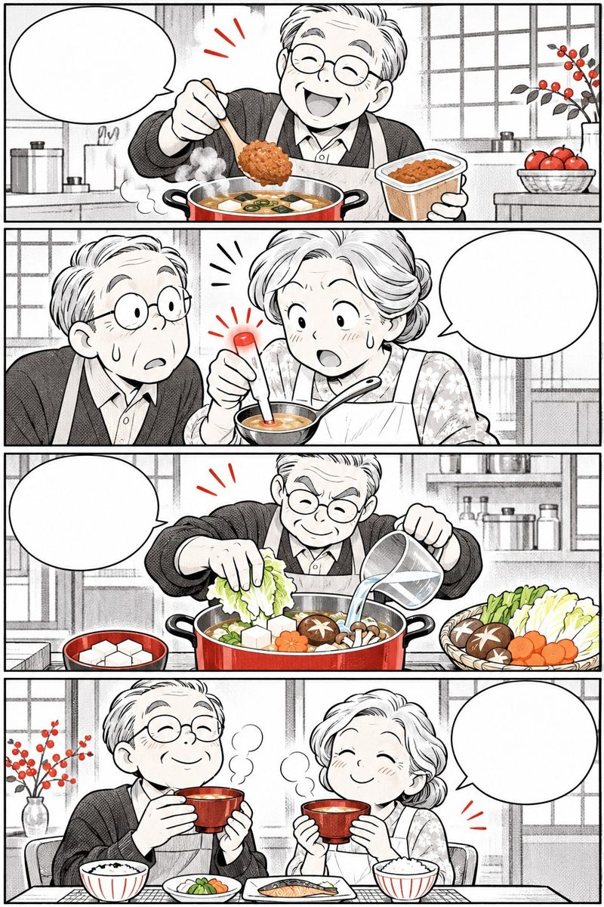

Tắm rừngtrà xanh, thanh lọc kiểu Nhật
Bí quyết đi dạo dưới tán cây xanh (Shinrin-yoku) và thưởng trà xanh Sencha đúng giờ giúp người Nhật làm dịu căng thẳng, bảo vệ mạch máu và tăng đề kháng.
Mục lục
Bấm vào chương để đọc.

Tắm mình trong
hương cây xanh
Liệu pháp Shinrin-yoku từ năm 1982
shinrin-yoku to ryokucha
“Tắm rừng” không phải là tắm bằng nước suối, mà là đắm mình bằng cả 5 giác quan dưới bầu không khí trong lành của những tán cây xanh.
Những con số từ Rừng xanh & Lá trà Nhật
hoạt tính tế bào sát thủ tự nhiên (NK) sau buổi đi bộ dưới tán cây xanh nhờ hợp chất Phytoncide
nồng độ Cortisol và giảm nhịp tim, huyết áp tâm thu chỉ sau 20 phút ngắm nhìn tán lá xanh
nguy cơ tử vong do tim mạch ở người Nhật uống 3–4 tách trà xanh mỗi ngày (Nghiên cứu Ohsaki)
rừng trị liệu chuẩn y khoa (Forest Therapy Base) được công nhận chính thức trên khắp nước Nhật

Giáo sư Qing Li (Trường Y Nippon) chứng minh chỉ cần đi bộ công viên nhiều cây xanh 20 phút mỗi ngày cũng giúp hạ huyết áp và tăng đề kháng!
Nguồn: Li Q. et al., Environmental Health and Preventive Medicine; Kuriyama S. et al., JAMA (Ohsaki Study).
Bước ra khỏi bốn bức tường để thấy lòng nhẹ tênh
 Ở trong phòng mãi bí bách quá…
Ra công viên tắm rừng 20 phút!
Hương cây xanh dịu huyết áp!
Thêm chén trà ấm khoan khoái!
Ở trong phòng mãi bí bách quá…
Ra công viên tắm rừng 20 phút!
Hương cây xanh dịu huyết áp!
Thêm chén trà ấm khoan khoái!
Thiên nhiên xanh mát và chén trà ấm là liều thuốc bình an không tốn tiền ngay quanh ngôi nhà bạn.
Bí mật của “Phytoncide” trong tán lá cây
Cây xanh đứng yên một chỗ nhưng luôn tự bảo vệ mình khỏi sâu bệnh và nấm mốc bằng cách tỏa ra các tinh dầu bay hơi gọi là Phytoncide (như alpha-pinene, limonene):
 Hít Phytoncide: hạ hormone Cortisol
Tế bào NK: tăng protein bảo vệ Perforin
Hít Phytoncide: hạ hormone Cortisol
Tế bào NK: tăng protein bảo vệ Perforin
- Dịu thần kinh giao cảm: khi hít thở dưới vòm cây hoặc chăm sóc vườn cây ban công, hệ thần kinh phó giao cảm bật lên giúp mạch máu giãn nhẹ và tim đập khoan thai.
- Đánh thức tế bào NK kéo dài: nghiên cứu tại Trường Y Nippon cho thấy hiệu quả tăng tế bào miễn dịch NK sau một buổi dạo rừng có thể duy trì suốt nhiều ngày liền.
Nguồn: Hiệp hội Y học Rừng Nhật Bản (Japanese Society of Forest Medicine).
Phải lên tận rừng già mới “tắm rừng” được?

Nhiều người nghĩ ở thành phố thì không thể áp dụng Shinrin-yoku. Thực tế rất gần gũi:
Phải đi xa hàng trăm cây số lên núi mới tắm rừng được
Công viên nhiều cây cổ thụ, bờ hồ hoặc vườn cây quanh khu phố đều có hiệu quả quý
Tắm rừng là phải đi bộ thật nhanh cho vã mồ hôi
Đi thật thong thả, dừng lại hít thở sâu và ngắm màu xanh của lá bằng 5 giác quan
Vừa đi bộ công viên vừa cắm cúi xem điện thoại
Cất điện thoại vào túi để mắt và não thực sự được nghỉ ngơi
Đi bộ ngoài nắng gắt lúc 11–14h trưa
Chọn khung giờ 6h30–8h30 sáng hoặc 16h30–17h30 chiều mát dịu
Nguồn: Lâm nghiệp Quốc gia Nhật Bản & Viện Nghiên cứu Y học Rừng.
Tự rà 9 dấu hiệu “Đói thiên nhiên” & căng thẳng
Bấm vào những câu đúng với nhịp sống của bố mẹ hoặc chính mình:
Từ 2 dấu hiệu trở lên là lời nhắc nên dành 20 phút mỗi ngày dạo bước dưới tán cây xanh và thưởng trà thanh lọc.

Dạo bước xanh
bằng 5 giác quan
Mang Shinrin-yoku về công viên và ban công nhà Việt
gokan de kanjiru midori
Chỉ cần chậm bước chân lại một nửa, mở rộng 5 giác quan đón nắng lọc qua kẽ lá, công viên quen thuộc bỗng hóa thành khu rừng trị liệu.
Công thức 3 bước “Tắm xanh 20 phút”
Các hướng dẫn viên trị liệu rừng Nhật Bản (Forest Therapy Guide) hướng dẫn người lớn tuổi thực hành 20 phút dạo công viên theo 3 nhịp rất nhẹ nhàng:
- Nhìn
Ngắm ánh nắng xuyên qua tán lá xanh (người Nhật gọi là Komorebi · 木漏れ日) giúp võng mạc và vùng vỏ não thị giác dịu ngay căng thẳng.
- Thở
Hít vào bằng mũi 4 giây đón hương lá cây ẩm mát, rồi thở ra chậm rãi bằng miệng 8 giây (nhịp thở 1:2 kích hoạt dây thần kinh phế vị).
- Chạm
Đặt nhẹ bàn tay lên thân cây cổ thụ, lắng nghe tiếng chim hót hoặc tiếng gió xào xạc qua vòm lá.

Chỉ cần 20 phút không nhìn điện thoại dưới hàng cây xanh là mức hormone căng thẳng Cortisol đã giảm rõ rệt!
Nguồn: Miyazaki Y., Đại học Chiba — Shinrin-yoku: The Japanese Art and Science of Forest Bathing.
Đi bộ ngắm lá Komorebi, không vội đếm bước
 Rảo bước nhanh cho đủ 5.000 bước!
Khoan! Ngắm nắng qua tán lá kìa!
Hít hương cây 4s, thở êm 8s…
Tim đập êm, mắt dịu mát hẳn!
Rảo bước nhanh cho đủ 5.000 bước!
Khoan! Ngắm nắng qua tán lá kìa!
Hít hương cây 4s, thở êm 8s…
Tim đập êm, mắt dịu mát hẳn!
Đi bộ rèn gân cốt cần nhịp nhanh vừa, còn đi bộ “tắm rừng” cần sự thong dong để dưỡng tâm và hạ áp.
Hiệu ứng sóng não Alpha khi ngắm tán cây
Đo điện não đồ (EEG) và biến thiên nhịp tim (HRV) ở người trên 50 tuổi khi đi dạo dưới bóng cây so với đi bộ cạnh đường xe cộ ồn ào cho thấy sự khác biệt lớn:

Phố ồn ào, khói bụi: căng mạch, mệt não Dưới tán cây xanh: tăng sóng Alpha, êm áp- Nghỉ ngơi thùy trán: không gian xanh tự nhiên giúp vùng vỏ não trước trán (nơi xử lý lo âu, tính toán) giảm tiêu thụ oxy quá mức và chuyển sang sóng Alpha thư thái.
- Nếu trời mưa không ra công viên được: chăm sóc vài chậu cây xanh hương thảo, bạc hà, trầu bà hoặc bonsai ngoài ban công cũng mang lại hiệu quả thư giãn 5 giác quan tại nhà.
Nguồn: Park B. J. et al., Environmental Health and Preventive Medicine (2010).

Ra công viên từ 4–5 giờ sáng khi trời còn tối lạnh?
Ở Việt Nam nhiều cô chú có thói quen đi công viên quá sớm khi sương lạnh còn dày và cây xanh chưa quang hợp:
Thói quen chưa an toàn
- Ra khỏi nhà lúc 4h30–5h00 sáng khi trời còn tối và gió lạnh
- Ban đêm cây xanh chưa có nắng để nhả nhiều oxy
- Đi bộ lúc bụng đói meo chưa uống ngụm nước ấm nào
Khung giờ vàng kiểu Nhật
- Đợi 6h15–8h00 sáng khi nắng ấm đã lên, sương tan
- Cây xanh đón nắng sớm tỏa nhiều oxy và Phytoncide nhất
- Uống 1 cốc nước ấm trước khi bước ra khỏi nhà
4 cách mang “Rừng xanh” vào ngôi nhà Việt
Bên cạnh công viên gần nhà, ông bà có thể tận hưởng thiên nhiên mỗi ngày qua 4 góc nhỏ:
Trồng vài chậu hương thảo, bạc hà, sả hoặc nguyệt quế để vò nhẹ lá hít hương tinh dầu
Đi bộ chậm 20–30 phút dưới hàng cây xanh hoặc quanh hồ nước lúc 6h30–8h00 sáng
Đặt bàn uống trà nơi có ánh sáng tự nhiên và nhìn ra chậu cây xanh mát mắt
Mở cửa sổ đón gió sớm, hít vào bằng mũi 4 giây, thở ra chậm 8 giây
Làm ngay
- Đội mũ rộng vành thoáng khí và mang giày êm chân
- Mang theo bình nhỏ nước ấm hoặc trà xanh loãng ấm
Đừng làm
- Đặt quá nhiều chậu cây lớn kín mít trong phòng ngủ đóng kín ban đêm
- Đi dạo dưới trời mưa lạnh hoặc nắng gắt giữa trưa
Nguồn: Hiệp hội Cảnh quan và Sức khỏe Đô thị Nhật Bản.
Tính số buổi “Tắm rừng” công viên trong tuần
Chỉ cần 120 phút tiếp xúc thiên nhiên xanh mỗi tuần (≈ 4–6 buổi × 25 phút) giúp cải thiện rõ rệt huyết áp và giấc ngủ.

Chén trà xanh
dọn mạch, dịu tâm
Kho báu EGCG và L-theanine trong lá trà
ryokucha no katekin to teanin
Sau buổi dạo bước dưới tán cây, người Nhật trở về hiên nhà nâng chén trà xanh ấm — nơi hai hoạt chất quý EGCG và L-theanine cùng hòa quyện.
Hai báu vật trong chén trà xanh Nhật Bản
- Vùng trồng trà Shizuoka & Kagoshima sống thọ
Các vùng trồng trà xanh nổi tiếng tại Nhật đều có tỷ lệ mắc bệnh tim mạch và đột quỵ thấp bậc nhất cả nước.
- Chống oxy hóa nội mô mạch máu
Hợp chất Catechin (EGCG) giúp trung hòa gốc tự do trong lòng mạch và hỗ trợ kiểm soát đường huyết, mỡ máu sau ăn.
- Tỉnh táo êm dịu, không bồn chồn
Nhờ có L-theanine làm dịu hệ thần kinh, uống trà xanh đúng độ ấm giúp đầu óc minh mẫn mà tim không bị đập nhanh như cà phê đậm.
Pha trà bằng nước ấm vừa 70–80°C giúp chiết xuất trọn vẹn L-theanine ngọt dịu mà không bị đắng chát!
Nguồn: Kuriyama S. et al., JAMA (2006) — Ohsaki National Health Insurance Cohort Study.
Bí quyết pha trà không mất ngủ của bà Sato
 Thích trà xanh mà sợ mất ngủ!
Do pha nước sôi lúc chiều muộn!
Pha nước 75°C, uống trước 15h!
Ngọt dịu, tối ngủ ngon lành!
Thích trà xanh mà sợ mất ngủ!
Do pha nước sôi lúc chiều muộn!
Pha nước 75°C, uống trước 15h!
Ngọt dịu, tối ngủ ngon lành!
Thưởng trà xanh trước 15h chiều và cách bữa ăn 45 phút là nghệ thuật hưởng trọn lợi ích của lá trà mà vẫn ngủ sâu.
Vì sao không nên dội nước sôi 100°C vào trà xanh?
Nhiệt độ nước quyết định hoạt chất nào trong lá trà xanh tan ra chén nước của bạn:

Nước 70–80°C: giàu L-Theanine & EGCG êm dịu Nước sôi 100°C: nhiều Caffeine & Tannin chát- Ở 70–80°C: axit amin L-theanine (tạo vị ngọt dịu thư giãn) tan ra rất tốt ngay ở nhiệt độ ấm vừa, trong khi Caffeine và Tannin chát tan ra ít hơn hẳn.
- Mẹo hạ nhiệt nước kiểu Nhật: rót nước sôi từ bình vào chén tống (hoặc mở nắp ấm chờ 3–4 phút) cho nước dịu xuống khoảng 75–80°C rồi mới rót vào ấm trà.
Nguồn: Viện Nghiên cứu Trà Quốc gia Nhật Bản (NARO Institute of Vegetable and Tea Science).

Uống trà xanh đặc ngay lúc đói hoặc ngay sau bữa cơm?
Ở Việt Nam nhiều bác hay uống chén chè đặc lúc mới ngủ dậy bụng rỗng hoặc vừa buông bát đũa:
Thói quen hại dạ dày
- Uống trà đặc lúc bụng đói làm cồn ruột, nôn nao (“say trà”)
- Uống trà ngay trong hoặc vừa xong bữa ăn làm giảm hấp thu Sắt, Canxi
- Để nước trà pha từ sáng qua đêm hôm sau vẫn uống
Thưởng trà chuẩn Nhật
- Uống trà ấm loãng vừa phải sau bữa ăn 45–60 phút
- Ngưng trà xanh có caffeine sau 15h00 chiều
- Buổi tối chuyển sang nước lọc ấm hoặc trà lúa mạch Mugicha
Nhịp ngày mới “Dạo bước xanh – Thưởng trà ấm”
Kết hợp đi dạo dưới tán cây và thưởng trà đúng khung giờ giúp mạch máu và tâm trí thanh sạch suốt ngày dài:
Buổi sáng (6h30 – 9h30)
- 6h30: Uống 1 cốc nước lọc ấm, đi bộ công viên ngắm cây xanh 20–30 phút
- 7h30: Ăn sáng đủ đạm
- 8h30 (sau ăn 45p): Thưởng 1–2 tách trà xanh ấm 75°C
Đầu giờ chiều (13h30 – 15h00)
- 14h00: Thưởng tách trà xanh ấm cuối ngày cùng bạn già / người thân
- Từ sau 15h00: Chỉ uống nước lọc ấm để tối ngủ sâu
- Chiều mát chăm cây cảnh ngoài ban công 15 phút

Tuyệt đối không dùng nước trà để uống thuốc tây hay viên bổ nhé — luôn uống thuốc bằng nước lọc ấm!
Nguồn: Hiệp hội Nghiên cứu Khoa học Trà Xanh Nhật Bản.
Sổ theo dõi Dạo bước xanh & Trà ấm 7 ngày
Ghi số phút đi dạo dưới bóng cây xanh và số tách trà xanh ấm (trước 15h) mỗi ngày (VD: 25 phút · 2 tách).
Nếu dạ dày nhạy cảm với trà xanh?
Hãy pha thật loãng bằng nước 70°C, uống sau bữa ăn sáng 45 phút, hoặc chọn trà gạo lứt rang Nhật Bản (Genmaicha) rất êm bụng.
Số liệu chỉ lưu riêng tư ngay trong điện thoại hoặc máy tính của bạn.

Quà tặng từ
rừng xanh, biển biếc
Hiệp đồng Phytoncide và Fucoidan nuôi tế bào NK
mori to umi no men'eki
Người Nhật may mắn được bao bọc bởi 67% diện tích rừng xanh và bốn bề biển cả — nơi hương rừng Phytoncide và tảo nâu Mozuku Fucoidan cùng đánh thức miễn dịch tự nhiên.
Hai cánh tay bảo vệ “Đội vệ binh NK” tuổi 50+
Tế bào sát thủ tự nhiên (NK cell) là tuyến phòng thủ đầu tiên giúp cơ thể chống lại virus giao mùa và các tế bào suy yếu. Tuy nhiên, stress kéo dài làm hormone Cortisol tăng cao sẽ làm “tê liệt” tế bào NK.
là cơ chế bảo vệ khi vừa tắm rừng + thưởng trà xanh (hạ Cortisol qua đường hô hấp – thần kinh), vừa bổ sung tảo nâu Mozuku Fucoidan (đánh thức đại thực bào và tế bào NK từ đường ruột).

Hít hương cây xanh ngoài công viên + Nuôi dưỡng đường ruột bằng Fucoidan bên trong giúp sức đề kháng vững vàng gấp bội!
Nguồn: Li Q. (Nippon Medical School) & Negishi H. et al., Journal of Nutrition (2013).
Bí quyết khỏe khoắn suốt bốn mùa của nhà Sato

Sáng ra công viên hít hương lá! Tế bào NK hết hẳn căng thẳng! Thêm Fucoidan tảo nâu dưỡng ruột! Trong ấm ngoài êm, khỏe bốn mùa!Thiên nhiên chữa lành tâm trí từ bên ngoài, dưỡng chất biển xanh bồi đắp miễn dịch từ bên trong.
Hiệp đồng chống oxy hóa: Trà xanh & Tảo nâu
Sự kết hợp giữa Polyphenol trà xanh (EGCG) và Polysaccharide tảo nâu (Fucoidan) tạo nên lá chắn kép cho tế bào tuổi 50+:
 1. Trà xanh & Cây xanh: dịu thần kinh, sạch mạch
2. Tảo nâu Fucoidan: bảo vệ niêm mạc, tăng NK
1. Trà xanh & Cây xanh: dịu thần kinh, sạch mạch
2. Tảo nâu Fucoidan: bảo vệ niêm mạc, tăng NK
- Dọn gốc tự do đa tầng: Catechin trong trà xanh bảo vệ nội mô mạch máu, trong khi Fucoidan che chở niêm mạc tiêu hóa và hạn chế quá trình oxy hóa tế bào.
- Lưu ý cách giờ uống: uống viên bổ sung Fucoidan cùng nước lọc ấm; thưởng trà xanh cách đó khoảng 45–60 phút để cả hai phát huy trọn vẹn nhất.
Nguồn: Hiệp hội Nghiên cứu Fucoidan Nhật Bản & Hội Dinh dưỡng Nhật Bản.

Uống nước trà xanh đóng chai ngọt thay trà pha?
Trên thị trường có nhiều loại nước giải khát vị trà xanh đóng chai, nhưng rất khác với trà xanh dưỡng sinh của người Nhật:
Nước trà đóng chai có đường
- Chứa nhiều đường tinh luyện làm tăng đường huyết và mỡ máu
- Hàm lượng Catechin và L-theanine tự nhiên còn rất thấp
- Uống lạnh dễ làm co mạch dạ dày và lạnh cổ họng
Trà xanh & Fucoidan chuẩn Nhật
- Trà xanh lá hãm ấm 75°C không đường, giàu EGCG tinh khiết
- Hoặc trà lúa mạch / trà gạo lứt rang ấm dịu cho buổi chiều
- Bổ sung Fucoidan Okinawa định lượng chuẩn cùng nước lọc ấm
7 ngày kết nối thiên nhiên & dưỡng đề kháng
Thử 7 ngày liền
Dạo xanh & dưỡng đề kháng, đóng dấu
Pha trà 75 độ
uống trước 3 giờ chiều
Bí quyết hưởng trọn EGCG mà tối vẫn ngủ ngon
oishii ryokucha no irekata
Chỉ cần nhớ hai mốc số “75°C” và “Trước 15h chiều”, người lớn tuổi nào cũng có thể thưởng trà xanh mỗi ngày mà bụng êm, ngủ sâu.
Mẹo “Rót qua chén” hạ 10°C của người Nhật
Người Nhật có một kỹ thuật rất thú vị gọi là Yuzamashi (湯冷まし — Làm dịu nước sôi) mà không cần dùng nhiệt kế:
là mức nhiệt độ giảm xuống mỗi khi bạn rót nước sôi từ ấm đun qua một chiếc chén sứ khô trước khi đổ vào ấm pha trà (95°C → 85°C → 75°C).
Khi hãm lá trà ở 75°C trong 60 giây, nước trà có màu xanh ngọc dịu mắt, vị ngọt hậu Umami của L-theanine lan tỏa, không hề gắt cổ hay làm xót dạ dày.
Rót nước sôi ra chén uống trà chờ 1 phút cho ấm chén rồi đổ ngược vào ấm trà — vừa tráng ấm chén, vừa có nước 75°C chuẩn xác!
Nguồn: Hiệp hội Hướng dẫn Trà Nhật Bản (Nihoncha Instructor Association).
Chuyển sang trà không caffeine sau 3 giờ chiều
 4 giờ chiều pha ấm trà xanh nhé?
Sau 15h trà làm khó ngủ đấy ông!
Chiều tối uống trà lúa mạch ấm!
Thơm dịu, đêm ngủ thẳng giấc!
4 giờ chiều pha ấm trà xanh nhé?
Sau 15h trà làm khó ngủ đấy ông!
Chiều tối uống trà lúa mạch ấm!
Thơm dịu, đêm ngủ thẳng giấc!
Thời gian bán thải của Caffeine ở người trên 50 tuổi kéo dài 5–7 tiếng — ngưng trà xanh sau 15h là bảo hiểm cho giấc ngủ đêm.
Khoảng cách 45 phút với bữa ăn & viên thuốc
Catechin và Tannin trong trà xanh rất tốt cho mạch máu, nhưng nếu gặp Sắt, Canxi hoặc thuốc tây ngay trong dạ dày sẽ kết tủa:
 Sau bữa ăn 45–60 phút: không cản trở hấp thu Sắt
Uống thuốc bằng nước lọc ấm: an toàn tuyệt đối
Sau bữa ăn 45–60 phút: không cản trở hấp thu Sắt
Uống thuốc bằng nước lọc ấm: an toàn tuyệt đối
- Bảo vệ nguồn Sắt tạo máu: uống trà ngay trong bữa cơm có thể làm giảm hấp thu Sắt từ rau và thịt tới 40–50%; chỉ cần chờ 45 phút sau ăn là hoàn toàn yên tâm.
- Không uống trà quá nóng (>65°C): Tổ chức Y tế Thế giới (WHO) khuyến cáo không uống đồ uống bỏng lưỡi để bảo vệ niêm mạc thực quản.
Nguồn: Hội Dược học Nhật Bản & Viện Dinh dưỡng Quốc gia.

Hãm trà trong bình giữ nhiệt kín suốt cả ngày?
Cho lá trà xanh vào bình giữ nhiệt ủ nóng suốt 6–8 tiếng
Ủ nóng lâu làm Vitamin C và Catechin bị oxy hóa, nước trà nồng đắng; nên pha từng ấm nhỏ uống trong 1–2 giờ
Uống 7–8 cốc trà đặc mỗi ngày thay nước lọc
Chỉ uống 2–3 tách trà xanh vừa ấm, phần còn lại uống 5–6 cốc nước lọc ấm
Khi đang đói bụng mệt lả thì uống trà xanh cho tỉnh
Lúc đói chỉ nên uống nước lọc ấm hoặc ăn nhẹ trước, không uống trà lúc bụng rỗng
Tính lượng Catechin & 7 ngày thưởng trà chuẩn
Thử 7 ngày
Uống trà đúng giờ, đóng dấu
Thở sạch lá phổi
tâm an, mạch bền
Nghệ thuật tĩnh tâm giữa đời thường (Seijaku)
kokyū to kokoro no seijaku
Mỗi hơi thở ra thật dài dưới tán cây xanh là một lần lá phổi đẩy hết khí cặn ra ngoài và trái tim tìm lại nhịp đập bình yên.
Hơi thở bụng “Tanden” làm sạch phổi tuổi 50+
Khi có tuổi, lồng ngực kém đàn hồi hơn khiến nhiều người chỉ thở nông ở phần đỉnh phổi. Các bác sĩ hô hấp Nhật Bản hướng dẫn bài thở “Thở ra trước, hít vào sau” khi đứng trước cây xanh:
- 1. Thở ra hết khí cặn (6–8 giây)
Khép nhẹ môi như thổi sáo, thở ra từ từ cho bụng xẹp nhẹ để đẩy hết khí tồn đọng ở đáy phổi ra ngoài.
- 2. Hít hương cây bằng mũi (4 giây)
Ngậm miệng, hít nhẹ bằng mũi để không khí trong lành và Phytoncide tự động tràn đầy hai lá phổi, bụng phồng nhẹ.
- 3. Thưởng một ngụm trà ấm
Sau 5–6 nhịp thở sâu, nhấp ngụm trà ấm giúp làm ẩm niêm mạc họng và mang lại sự thư thái trọn vẹn.
Tập trung vào nhịp thở ra dài gấp đôi nhịp hít vào là công tắc nhanh nhất để hạ nhịp tim và huyết áp khi đang hồi hộp!
Nguồn: BS. Homma Ikuo (Đại học Showa) — Liệu pháp Hô hấp và Thần kinh Tự chủ Nhật Bản.
Mỗi sáng một nhành xanh, một chén trà an lành
 Thở ra 8 giây, hít hương lá 4 giây!
Ngực mở rộng, đầu nhẹ bẫng bà ơi!
Về hiên nhà nhấp trà ấm 75°C!
Tâm an, mạch êm, khỏe suốt năm!
Thở ra 8 giây, hít hương lá 4 giây!
Ngực mở rộng, đầu nhẹ bẫng bà ơi!
Về hiên nhà nhấp trà ấm 75°C!
Tâm an, mạch êm, khỏe suốt năm!
Không cần đi tìm tiên dược nơi xa: cây xanh, nắng sớm và chén trà ấm đã ở ngay bên hiên nhà.
Vòng tròn cộng hưởng: Rừng xanh — Trà ấm — Đề kháng
Khi duy trì thói quen dạo bước dưới tán cây kết hợp thưởng trà ấm và dưỡng chất biển xanh, cả 3 hệ thống lớn trong cơ thể cùng trẻ lại:
 Dạo cây + Thở sâu: dịu thần kinh, êm huyết áp
Trà xanh + Tảo nâu: chống oxy hóa, tăng NK
Dạo cây + Thở sâu: dịu thần kinh, êm huyết áp
Trà xanh + Tảo nâu: chống oxy hóa, tăng NK
- Giảm viêm mạn tính: hạ thấp hormone căng thẳng Cortisol kết hợp với chất chống oxy hóa EGCG và Fucoidan giúp bảo vệ tế bào trước sự lão hóa.
- Nuôi dưỡng niềm vui sống: ngắm nhìn một chồi non mới nhú ngoài ban công mỗi sáng mang lại nguồn năng lượng tích cực cho tuổi 50+.
Nguồn: Hiệp hội Y học Dự phòng Nhật Bản.

Hít thở sâu là phải gồng ngực nín thở thật lâu?
Hít thật mạnh rồi gồng ngực nín thở lâu
Người cao tuổi hoặc có cao huyết áp tuyệt đối không nín thở gồng ngực; chỉ hít nhẹ và thở ra êm
Chỉ khi nào đi du lịch Đà Lạt, Sapa mới tắm rừng
20 phút mỗi sáng ở công viên gần nhà hoặc ban công cây xanh mới là điều nuôi dưỡng sức khỏe lâu dài
Uống trà xanh càng đắng chát càng tốt cho tim
Pha ấm dịu 75°C vừa phải để êm dạ dày và giữ giấc ngủ sâu
30 giây thở sạch phổi (Nhịp thở Shinrin-yoku)
Chỉ 3 nhịp thở sâu (mỗi nhịp 10 giây: hít mũi 4s, thở miệng 6s) trước tán cây xanh giúp làm dịu nhịp tim tức thì.